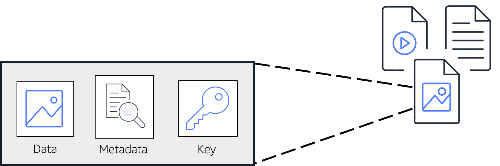

15 Amazon Simple Storage Service (Amazon S3)
Most businesses need to store data, and Amazon S3 is a reliable solution for storing and retrieving virtually unlimited data at any scale.
15.1 Understanding object storage
Object storage is a data storage architecture ideal for storing, archiving, backing up, and managing high volumes of static, unstructured data, such as emails, videos, photos, web pages, audio files, sensor data, and other media and web content.
Objects in object storage are discrete units of data stored in a structurally flat environment. Unlike file-based systems with folders and directories, each object is a self-contained repository that includes the data, metadata (descriptive information about the object), and a unique ID number for locating and accessing the object.
Object storage allows for unlimited scaling and improved data resiliency and disaster recovery by aggregating object storage devices into larger pools and distributing these pools across locations. Objects are often stored on cloud servers and accessed via Application Programming Interfaces (APIs), primarily HTTP-based RESTful APIs.

Source: AWS Cloud Practitioner Essentials
In object storage, each object consists of data, metadata, and a key:
- Data: This can be an image, video, text document, or any other file type.
- Metadata: Contains information about the data, such as usage, size, and other relevant details.
- Key: A unique identifier for the object.
Data is stored as objects in buckets. For example, a file on your hard drive is an object, and the file directory is the bucket. The maximum object size for upload is 5 terabytes. Objects can be versioned to protect against accidental deletion, and permissions can be set to control access.
Amazon S3 provides multiple storage tiers for different use cases, such as frequently accessed data versus long-term archival.
15.2 Amazon S3
Amazon Simple Storage Service (Amazon S3) is an object storage service offering industry-leading scalability, data availability, security, and performance. It enables customers of all sizes and industries to store, manage, analyze, and protect any amount of data for virtually any use case, such as data lakes, cloud-native applications, and mobile apps. With cost-effective storage classes and easy-to-use management features, you can optimize costs, organize and analyze data, and configure fine-tuned access controls to meet specific business and compliance requirements.
15.2.1 Benefits
Scalability: Amazon S3 can store virtually any amount of data, scaling up to exabytes with unmatched performance. It is fully elastic, automatically growing and shrinking as you add and remove data. There’s no need to provision storage, and you pay only for what you use.
Durability and availability: Amazon S3 provides the most durable storage in the cloud with industry-leading availability. Its unique architecture is designed to provide 99.999999999% (11 nines) data durability and 99.99% availability by default, supported by the strongest SLAs in the cloud.
Security and data protection: Amazon S3 ensures data security with unmatched protection, compliance, and access control capabilities. Data is secure, private, and encrypted by default, with extensive auditing capabilities to monitor access requests to your S3 resources.
Lowest price and highest performance: For every task, Amazon S3 provides a variety of storage classes with the best price-performance ratios. Massive volumes of data can be cost-effectively stored, regardless of how often, seldom, or infrequently they are used, thanks to automated data lifecycle management. Throughput, latency, resilience, and flexibility offered by S3 guarantee that performance is never constrained by storage.
15.2.2 How it works

Amazon S3 stores data as objects within buckets. An object consists of a file and any metadata that describes the file. A bucket is a container for objects. To store data in Amazon S3, you first create a bucket and specify a bucket name and AWS Region. Then, you upload your data to that bucket as objects in Amazon S3. Each object has a key (or key name), which is the unique identifier for the object within the bucket.
Amazon S3 provides features that you can configure to support your specific use case:
- Versioning: S3 Versioning allows you to keep multiple versions of an object in the same bucket. This feature enables you to restore objects that are accidentally deleted or overwritten.
- Access controls: Buckets and the objects in them are private and can only be accessed with explicitly granted permissions. You can use bucket policies, AWS Identity and Access Management (IAM) policies, S3 Access Points, and access control lists (ACLs) to manage access.
15.3 Amazon S3 storage classes
Amazon S3 offers a variety of storage classes to fit different business and cost needs. When selecting a storage class, consider how often you plan to retrieve your data and how available you need it to be. Here is an overview of the different storage classes, along with use case examples for each.
15.3.1 Amazon S3 standard
Description: Designed for frequently accessed data, this storage class stores data in at least three Availability Zones. It provides high availability and durability, making it suitable for a wide range of use cases.
Use case examples:
- Websites: Hosting static assets such as images, CSS, and JavaScript files that are frequently accessed by users.
- Content distribution: Storing multimedia files for streaming services or content delivery networks (CDNs).
- Data analytics: Storing datasets that need to be quickly accessed and processed for analysis.
15.3.2 Amazon S3 standard-infrequent access (s3 standard-IA)
Description: Ideal for data that is infrequently accessed but needs high availability when required. It offers a lower storage price and higher retrieval price compared to S3 Standard, while still storing data in at least three Availability Zones.
Use case examples:
- Backup storage: Storing backups of application data that are not accessed frequently but need to be available when needed.
- Disaster recovery: Keeping disaster recovery copies of critical business data that must be quickly accessible in case of an emergency.
15.3.3 Amazon S3 one zone-infrequent access (s3 one zone-IA)
Description: Stores data in a single Availability Zone, offering lower storage costs. It is suitable for data that can be easily reproduced in the event of an Availability Zone failure.
Use case examples:
- Non-critical data: Storing data that can be recreated or is not critical to business operations, such as temporary logs or redundant copies of data.
- Cost-sensitive backups: Storing backup copies where cost savings are prioritized over redundancy.
15.3.4 Amazon S3 intelligent-tiering
Description: Ideal for data with unknown or changing access patterns. This storage class automatically moves objects between frequent and infrequent access tiers based on usage, with a small monthly monitoring and automation fee per object.
Use case examples:
- Dynamic data: Storing data where access patterns are unpredictable, such as data from IoT devices or logs that might be accessed irregularly.
- Cost optimization: Automatically optimizing costs by moving data to the most cost-effective storage tier without manual intervention.
15.3.5 Amazon S3 glacier instant retrieval
Description: Suitable for archived data that requires immediate access, with retrieval times within milliseconds.
Use case examples:
- Medical records: Storing medical records that need to be archived but must be quickly accessible for compliance or medical emergencies.
- Legal documents: Archiving legal documents that might be needed immediately for legal proceedings or audits.
15.3.6 Amazon S3 glacier flexible retrieval
Description: Low-cost storage for data archiving, with retrieval times ranging from minutes to hours. It is suitable for storing archived customer records or older media files.
Use case examples:
- Customer records: Archiving old customer records that are rarely accessed but must be retained for regulatory compliance.
- Media archives: Storing older video footage or historical data that can afford longer retrieval times.
15.3.7 Amazon S3 glacier deep archive
Description: The lowest-cost storage class for long-term data retention, with retrieval times from 12 to 48 hours. It is ideal for data accessed once or twice a year.
Use case examples:
- Compliance data: Storing data required for long-term retention, such as financial records or audit logs, which are rarely accessed.
- Historical archives: Archiving historical documents, research data, or records that are only needed occasionally.
15.3.8 Amazon S3 outposts
Description: Provides object storage on-premises with AWS Outposts, designed for local data residency requirements and demanding performance needs.
Use case examples:
- Local data residency: Storing sensitive data that must remain within a specific geographic location due to regulatory or compliance requirements.
- High-performance applications: Using for applications that require low-latency access to data stored on-premises, such as manufacturing systems or edge computing environments.
15.4 Comparing Amazon EBS and Amazon S3
15.4.1 Amazon S3 benefits
Amazon Simple Storage Service (Amazon S3) is AWS’s object storage solution. If you’ve ever used services like Google Drive or Dropbox, you’ll understand the basic concept of S3. At first glance, S3 seems like a simple place to store files, photos, videos, and other documents. However, S3 offers far more than basic object storage.
S3 provides scalable solutions, meaning it can grow or shrink to meet your needs in a cost-effective manner as your project size changes. It also helps you manage data effectively, allowing you to control who accesses your content. S3 offers robust data protection against various threats, replicates your data for increased durability, and provides different storage classes to help you save money.
15.4.2 Amazon S3 use cases
- Backup and restore: Have you ever accidentally deleted something important? S3’s backup and restore capabilities ensure users don’t lose data through versioning and deletion protection. Versioning saves a new version of a file every time it’s updated, and deletion protection ensures the user has the right permissions before deleting a file.
- Disaster recovery: What would a company do during an unexpected power outage or if their on-premises data center suddenly crashed? S3 data is protected in Amazon-managed data centers, the same ones Amazon uses to host their world-famous shopping website. By using S3, users get a second storage option without having to pay for the rent and utilities of a physical site.
- Archiving: Some businesses need to store financial, medical, or other data mandated by industry standards. AWS allows users to archive this type of data with S3 Glacier, one of the many S3 storage classes. S3 Glacier is a cost-effective solution for archiving and is one of the best in the market.
15.4.3 Amazon EBS benefits
Amazon Elastic Block Store (Amazon EBS) is AWS’s block storage service. EBS is different from S3 in that it provides a storage volume directly connected to EC2 (Elastic Cloud Compute) instances. EBS allows you to store files directly on an EC2 instance, enabling quick and cost-effective access to your files. Think of EBS as “EC2 storage.”
You can customize your EBS volumes to suit the workload. For example, if you need greater throughput, you could choose a Throughput Optimized HDD EBS volume. If you have no specific needs, an EBS General Purpose SSD might suffice. For high-performance needs, an EBS Provisioned IOPS SSD volume is suitable.
Just remember that EBS works with EC2 in a similar way to how your hard drive works with your computer. EBS lets you save files locally to an EC2 instance, allowing your EC2 to perform powerful tasks that would otherwise be impossible. Let’s look at a couple of examples.
15.4.4 Amazon EBS use cases
- Database performance: Many companies look for cheaper ways to run their databases. Amazon EBS provides both relational and NoSQL databases with scalable solutions that have low-latency performance. Slack, the messaging app, uses EBS to increase database performance to better serve customers worldwide.
- Instance backup: Another use case for EBS involves backing up your instances. Because EBS is an AWS-native solution, the backups you create in EBS can easily be uploaded to S3 for convenient and cost-effective storage. This ensures you can always recover to a certain point in time if needed.